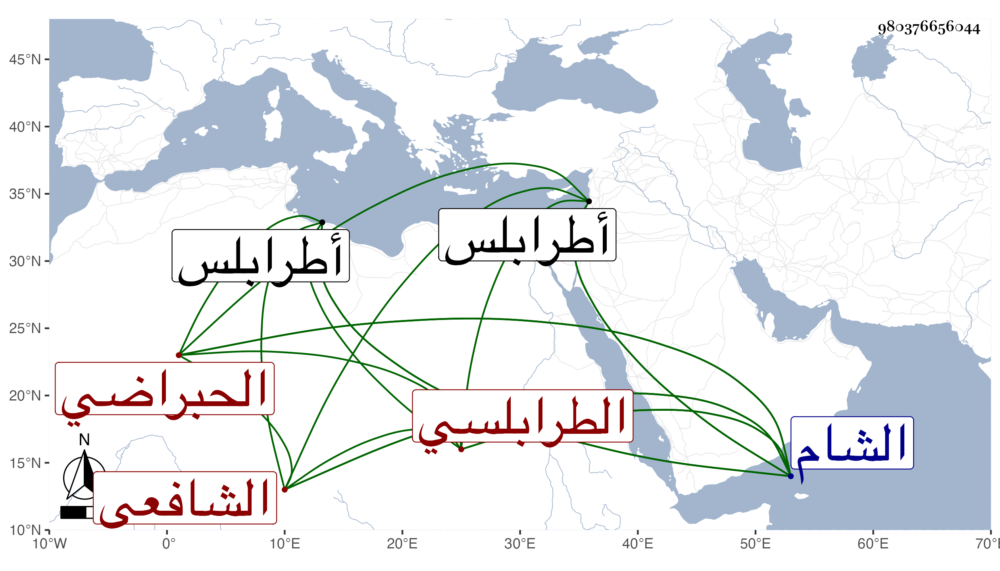

0902Sakhawi.DawLamic.ITO20230111-ara1.EIS1600.980376656044
Biography ID: 980376656044
405
عبد الوهاب بن محمد بن يحيى بن أحمد بن دغرة بن زهرة التاج أبو الفضل بن الشمس بن الشرف الحبراضي الأصل الطرابلسي الشافعي الآتي أبوه ويعرف كسلفه بابن زهرة بضم الزاي . ولد في أحد الربيعين سنة ست وثمانمائة بطرابلس ونشأ بها فقرأ القرآن عند الشيخ محمد الأعزاري وحفظ المنهاج الفرعي والأصلي وجمع الجوامع وألفية النحو وعرض على أبيه واشتغل عليه في الفقه وأصله وغيرهما وقرأ في العربية على العلاء المقسي وفي أصول الدين على الشمس بن الشماع ولازمه وانتفع به وصحب الزين الخافي وسمع أباه والشهاب بن الحبال وابن ناصر الدين وحكى عن والده انحرافا عنه كغيره من شافعية الشام لأجل ابن تيمية وحج ودخل الشام صحبة والده في سنة ست وعشرين وأقام ببلده متصديا للتدريس والإفتاء وجمع علي كل من المنهاجين والتنبيه والزبد شرحا سماها بهجة الوصول وتذكرة المحتاج وتذكرة النبيه وكل منها في خمس مجلدات والمعتمد بل عمل مختصرا سماه المختار في فقه الأبرار إلى غيرها مما وقفت على حجمه ، ولسرعة الانفصال عنه لم أتدبر في علمه والأقرب أنها إن كانت معتمدة فهي لوالده نعم هو إنسان حسن الصورة كثير التواضع له فضيلة في الجملة والجماعة من أهل بلده فيه كلام وقد لقيته ببلده وكتبت عنه قوله :
| عيون حبيبي النرجسيات أتلفت | فؤاد المعنى بالفتور وبالسحر |
| وأرمت سهامها صائبات نصولها | لقلب الذي قد مات بالصب والهجر |
في أشياء سواه . مات في سنة خمس وتسعين ببلده وقد شاخ .
